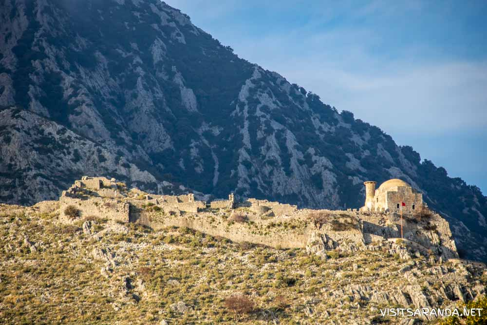
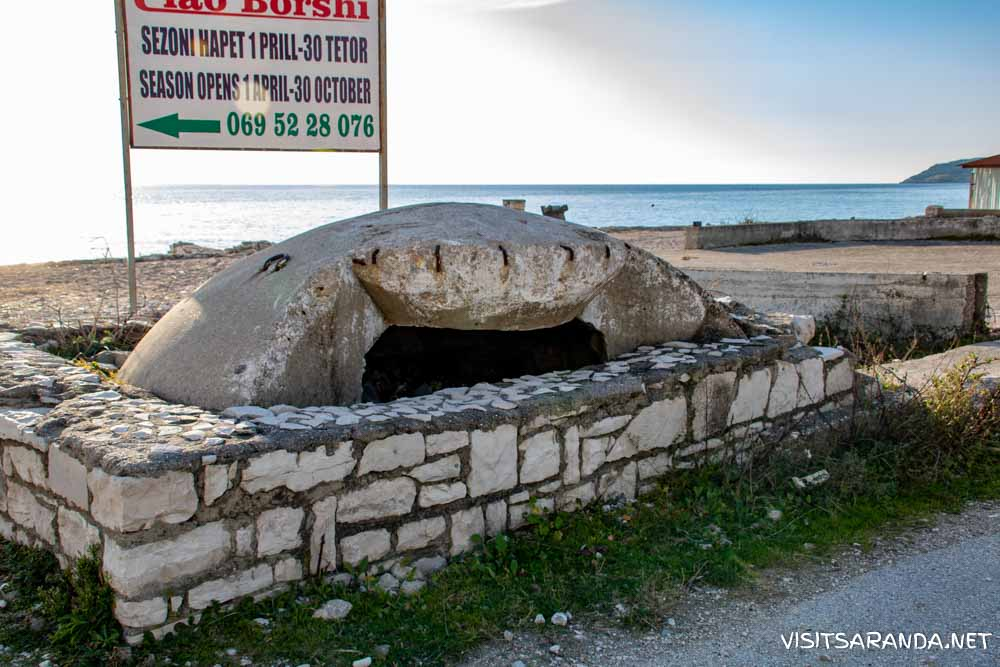
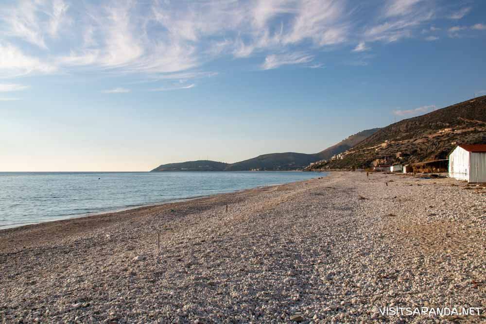

Borsh is a maritime village, in the Albanian Riviera, in the former Lukovë municipality, Vlorë County, Albania, At the 2015 local government reform it became part of the municipality Himarë. The village is inhabited by Albanians, many of whom have traditionally been Bektashi. In Borsh, the Lab dialect of Albanian is spoken.The village is very stable and growing in prosperity thanks to tourism and olive oil production. The thing that makes Borsh very popular is its beach, which is the largest beach in Ionian sea (7 km). The tourism has begun to develop a lot thanks to village's beauty and thanks to its friendly people. Continuing in this way Borsh will become soon the best destination for tourists in the South of Albania. Borsh borders with Fterra, Qeparo, Piqeras, Kuç, Çorraj, Kalasa, Zhulat, Tatzat, and has a population of 2500 registered inhabitants.
The region which Borshi is located was part of the Chaonia of the ancient region of Epirus. Borshi was probably fortified from antiquity and it belonged to Kemara (modern Himara) then part of the Chaonian tribal state, one of the main ancient Greek tribes in Epirus.[4] The castle remained in use in Roman times and was refortified by the Emperor Justinian in the sixth century. Nothing is known of the settlement in the Byzantine era, until it is mentioned as Sopotos in 1258 when it was part of the Despotate of Epirus that grew out of the failing Byzantine empire. Borsh then went through a period of considerable turmoil, changing hands several times between the Despotate of Epirus and Norman crusades invaders before being taken by the Turks in 1431. Fifty years later it was captured by Albanians led by Skanderbeg's son Gjon Kastrioti II, but was retaken by the Turks eleven years later and heavily refortified. On June 10, 1570 the castle of Sopot was taken by James Celsi, Proveditor of the Venetian navy, who left after leaving in charge the commander of Nauplion, Emmanuel Mormoris. This also caused part of the nearby Himariotes to submit to Venetian rule.[5] The next year the Ottoman army recaptured it and took Mormori as a prisoner. The 18th century was a turbulent economic time and due to Orthodox revolts and conflicts with Orthodox powers such as the Russian Empire, Ottoman governors at times applied pressures including drastic tax raises on the local Christian population as well as other pressures caused towns to convert.[6] Borsh converted in 1744 and followed it up by raiding nearby Piqeras, which remained Christian.[7][8] Ruined mosque of Hajji Bendo in Borsh The fortress was renovated again by Ali Pasha Tepelena, and it is these fortifications that visitors can view by taking the half-hour walk up to the ‘castle rock’ the limestone mount clearly visible above the old village. During Ali pasha's reign there were 700 houses at Borsh, and below the castle mount you can see a ruined mosque of Hajji Bendo and a madrese (a Muslim theological school), both of which were damaged in Ali Pasha's wars but survived, only to be destroyed by fighting after 1912 when the Turks left the region. Between 1912 and 1914 serious inter-ethnic conflict took place between Greeks and Albanians, and significant portion of the old village was destroyed, however some buildings remain in fine condition. Modern Borsh was built after that, but became seriously depopulated, firstly due to malaria, and following severe reprisal killings by Germans in WW2 however, depopulation was balanced by an influx of refugees from Vlora, fleeing into partisan territory from the city which was heavily contested until late in the war.
Borsh Beach (Plazhi i Borshit) is the largest beach in the south of Albania. It is about 30 meters wide and around 7 kilometers long, so there is plenty of space. From the main road in the village it’s about 2 kilometers to the beach where you can find many things to do. Along the beach are several hotels, restaurants and beach bars but because of the amount of space it usually never feels very crowded. If you want you can rent sunbeds and umbrellas or find your own space to put your towel down. You can also rent sports equipment, jet skis or go on a boat trip. The beach is very clean and the water amazingly clear. From the beach you have amazing views at the Ionean Sea, the coastline and the surrounding mountain range. With such a lengthy coastline it’s also great to make a long beach walk. Especially during sunset this can be very rewarding as the beach is facing east, which means you can see the sun go down in the sea.
Thank you for reading this article! Leave a like or dislike.